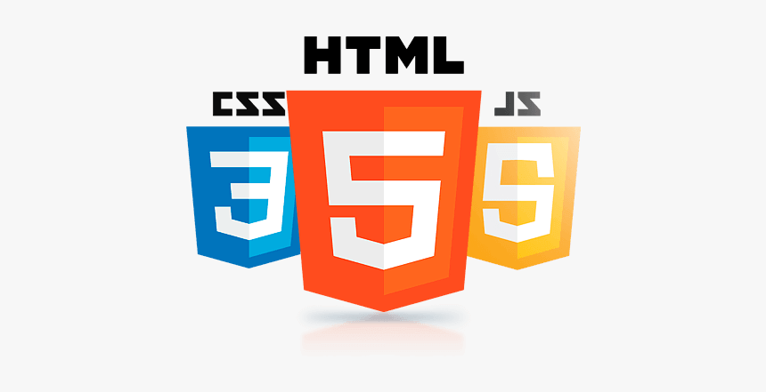

En esta entrada quiero compartir cómo he empezado a crear mi propio sitio web. HTML me permite estructurar el contenido y CSS darle estilo. Aunque al inicio parece complicado, poco a poco se vuelve más intuitivo.

Lo más importante es practicar: crear páginas sencillas, experimentar con colores, tipografías y diseños. Así se adquiere confianza y se entienden mejor los conceptos.